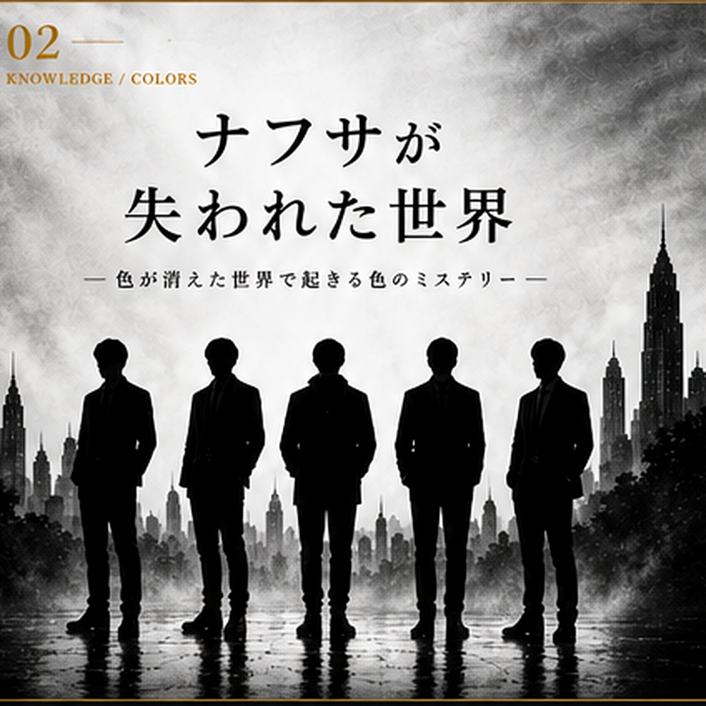

マーダーミステリーは、ただ犯人を当てるゲームではない。
登場人物の思惑を読み、証拠を比較し、断片的な情報からひとつの真実へとたどり着く。
その「考える」という体験に、歴史、経済、科学、社会などの知識を組み込む。
「楽しかった」で終わらない。遊んだあと、世界の見え方が少し変わる。
謎解きと知識を組み合わせた、学べるマダミス作品。
4年に1度の祭典。その直前に起きた事件。

色を失った世界で起こる、5人の物語。